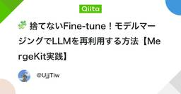

LLMタグが付けられた新着記事 - Qiita
https://qiita.com
Qiitaは、エンジニアに関する知識を記録・共有するためのサービスです。 プログラミングに関するTips、ノウハウ、メモを簡単に記録 & 公開することができます。
フィード
なぜAI Agentは失敗するのか？正確率を上げるアプローチまとめました
LLMタグが付けられた新着記事 - Qiita
はじめにClaude CodeやCursor、Manusなど、驚くほど賢いAI Agentが次々と登場している一方で、企業が本番環境への導入を検討すると、ある壁にぶつかります。それは「不安定性」です。LLMベースのAI Agentは、同じ指示でも毎回異なる結果を返すこと...
7時間前
【個人開発】YouTubeと連携するポモドーロタイマー「Pomodoro Flow」をZustandを使って開発した話
LLMタグが付けられた新着記事 - Qiita
1. はじめにはじめまして！keniと申します。Qiita初投稿です。どうぞよろしくお願いします。この記事では、個人の集中環境を最適化するために開発した、YouTube連携型ポモドーロタイマー「Pomodoro Flow」の技術的な側面について解説します。既存の...
11時間前
背理系ってなんやねんそのネーミング
LLMタグが付けられた新着記事 - Qiita
注記:↓の記事は別にまるっきり根拠ない妄想のアレって訳じゃなくてちゃんと業務でもバリバリ使ってて色んな根拠ある技法流用してたりそれなりに個人的に実地検証もしてるアレです本文:AIに長文書かせる練習してて試しに書き溜めてた脳内妄想を大量にgeminiさんに食べ...
19時間前

🧩 捨てないFine-tune！モデルマージングでLLMを再利用する方法【MergeKit実践】
LLMタグが付けられた新着記事 - Qiita
Introduction 🚀One challenge with large language models (LLMs) today is that fine-tuning often feels wasteful.Teams run dozens of exper...
1日前